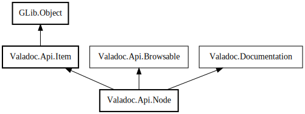

Node
Object Hierarchy:

Description:
public abstract class Node :
Item,
Documentation
Represents a node in the api tree.
Content:
Properties:
Creation methods:
Methods:
- public abstract void accept (Visitor visitor)
Visits this node with the specified Visitor.
- public void accept_all_children (Visitor visitor, bool filtered = true)
Visits all children of this node with the specified Visitor.
- public void accept_children (NodeType[] types, Visitor visitor, bool filtered = true)
Visits all children of this node with the given types with the
specified Visitor.
- public void accept_children_by_type (NodeType type, Visitor visitor, bool filtered = true)
Visits all children of this node with the given type with the
specified Visitor.
- public void add_child (Symbol child)
- internal override void check_comments (Settings settings, DocumentationParser parser)
- public int compare_to (Node node)
A comparison function used to sort nodes in alphabetical order
- public Node? find_by_name (string name)
- public List<Node> get_children_by_type (NodeType type, bool filtered = true)
Returns a list of all children with the given type.
- public List<Node> get_children_by_types (NodeType[] types, bool filtered = true)
Returns a list of all children with the given types.
- public string? get_filename ()
The corresponding file name
- public string? get_full_name ()
Returns canonicalized absolute name (GLib.FileStream for instance)
- public SourceFile get_source_file ()
- public bool has_children (NodeType[] types)
Specifies whether this node has at least one child with the given
types
- public bool has_children_by_type (NodeType type)
Specifies whether this node has at least one child with the given type
- public bool has_visible_children (Settings settings)
Specifies whether this node has at least one visible child
- public bool has_visible_children_by_type (NodeType type, Settings settings)
Specifies whether this node has at least one visible child with the
given type
- public bool has_visible_children_by_types (NodeType[] types, Settings settings)
Specifies whether this node has at least one visible child with the
given types
- public abstract bool is_browsable (Settings settings)
- internal override void parse_comments (Settings settings, DocumentationParser parser)
Fields:
Inherited Members:
All known members inherited from class Valadoc.Api.Item
All known members inherited from class GLib.Object
All known members inherited from interface Valadoc.Documentation